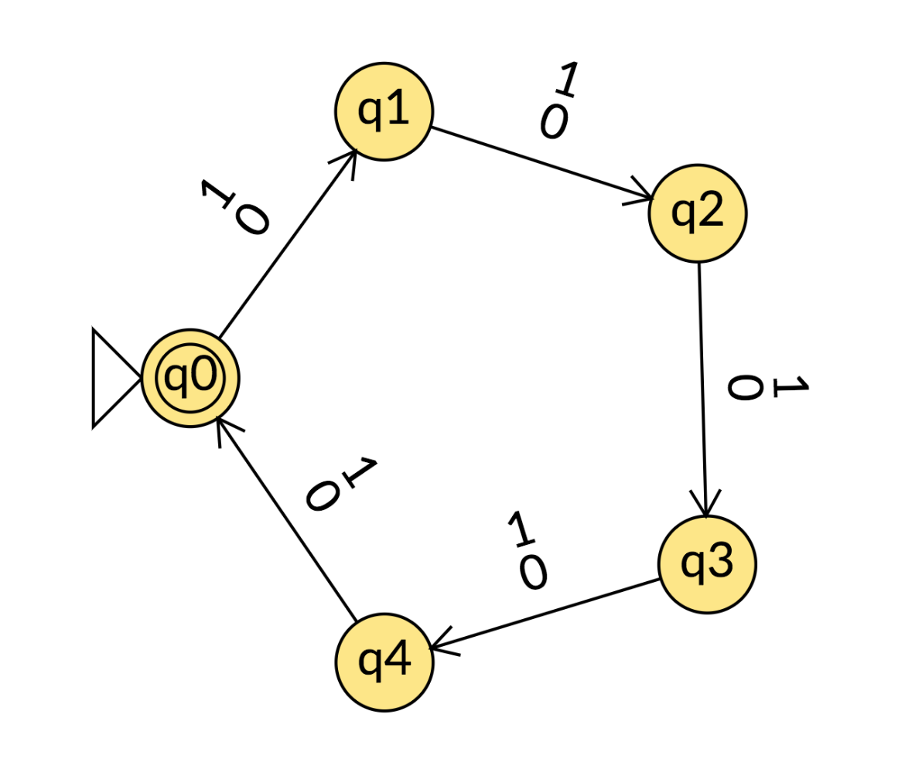
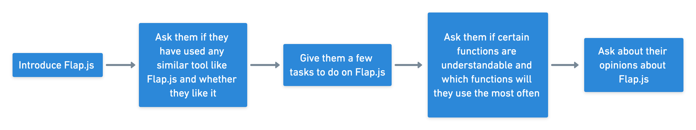
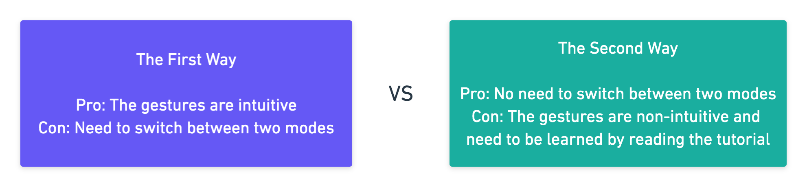
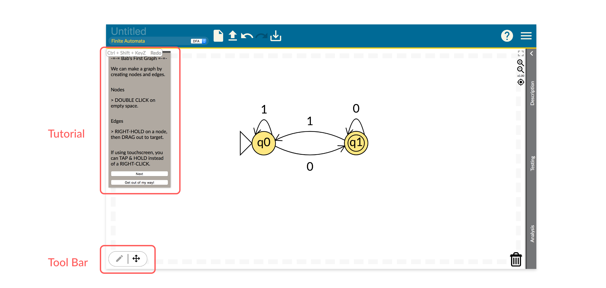
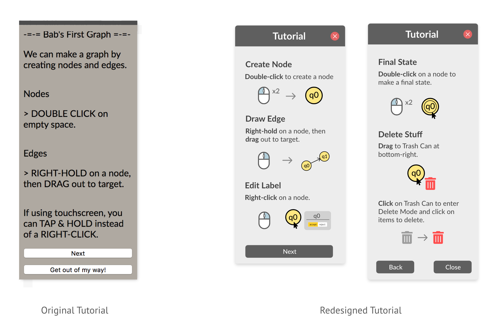
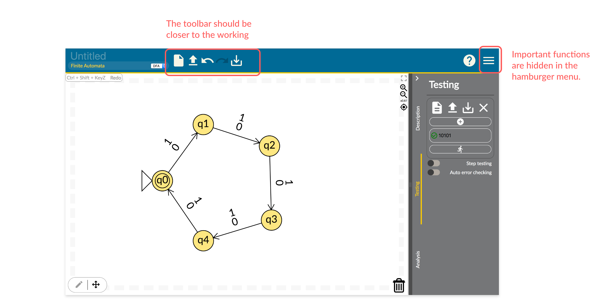
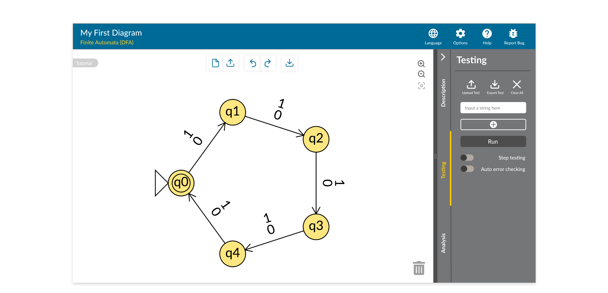
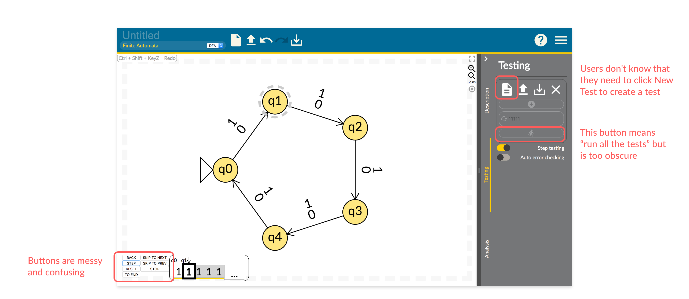
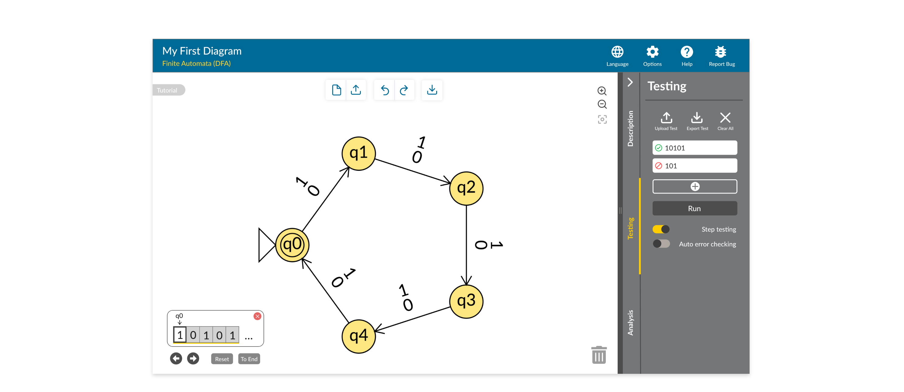

Flap.js is a web app for computer science students to explore and construct formal languages and automata with real-time analysis and error checking. It is initiated by Professor Mia Minnes in Computer Science and Engineering Department at UC San Diego. I joined the team to redesign the user interface of Flap.js. This project is challenging for me, since the computer science concepts involved are completely new to me. I managed to overcome this difficulty and successfully enhanced the efficiency of interaction.
The Team
Flap.js Team
My Role
Redesign the user interface
My job involves user interview, usability testing, prototyping, and ideation
Understand the web app Flap.js
As mentioned before, Flap.js is a web app for computer science students to explore and construct formal languages and automata. You may ask: What exactly does this web app do? What on earth is formal languages and automata? To be honest, at beginning I was as confused as you might be now. In fact, this subject is only taught in a specific computer science course, and even most computer science students who haven’t taken that course do not understand the subject.
I had a long conversation with one of computer science engineers in the team. She tried to explained the computing theories to me and showed me what they can do with the web app. But in the end, I still didn’t quite get it. She said that she could borrow me the textbook, which is about 5-inch thick. I turned down her “favor”. To better understand the web app and computer science concepts it involves, I watched a few tutorials on YouTube and played with the web app for a long time. Finally, I was able to understand the basic concepts and what users would normally do on the web app.
Simply speaking, users would draw diagrams of finite automata (a simple idealized machine used to recognize patterns), and they would run tests to see if character sets of the input have passed through.
A diagram drawn at Flap.js
User Interview & Usability Testing
Before I conducted the user interview and usability test, I talked to all my teammates and collected painpoints that they thought Flap.js had. I also played with the web app and recorded my concerns.
With help from Professor Minnes, I sent recruiting emails to students in CSE 105 class (The Mathematical Theory of Computability) and found 4 participants. Since I did not know much about the subject, I had a programmer from the team to accompany me during each interview and test. In this way, if the conversation got too professional for me, I would have my partner to handle it, and we could receive more valuable feedback from the participant.
Below is the process of the user interview and usability test.
I summarized the my findings and put all problems into four categories based on their severity.
I (Must be fixed)
II (Should be fixed)
III (Could be fixed if we have time)
IIII (Debatable opinions of mine).
I shared my findings and discussed solutions with the rest of the team. Beside the severity of a problem, the difficulty of solving a problem was also a factor I took into consideration for redesign.
I will talk about my findings and how I fixed the problems in the next section.
Redesign Highlights
Part 1 Tutorial vs. Toolbar
There are two ways to draw a diagram on Flap.js, and I was wondering which way will users choose. The first way is to switch between Action Mode and Move Mode by clicking the toolbar, and the gestures are intuitive (users only need to left-click or left-hold). In the second way, there is no bother to switch between the two modes, but users have to read the tutorial first, because some gestures are not very intuitive (e.g. they need to right-hold to draw a line). Only one of the two ways should remain, since having them two at the same time causes great confusion.
 Original version of the homepage
During the usability tests, all of the four participants chose to read the tutorial rather than switching modes at the toolbar, which means the second way is more preferable. Since participants also complained about the readability of the tutorial, I decided to redesign the tutorial using more concise languages and simple illustrations.
Part 2 Rearrangement of tools
According to the usability tests, users have difficulty finding tools hidden under the hamburger menu, so I decided to put out all these tools. I also moved the toolbar, that used to be placed at the banner, to the working area, so the banner would not be cramped.
Original Version
Redesign Version
Part 3 Redesign of Testing Function
In the original version, the drawer on the right is hidden when users opening the website, causing the tools in the drawer hard to notice. Since 3 out of 4 participants considered the Testing function to be the most useful and most likely to be used, I decided to have the Testing function displayed when users open the website. The Testing function is pretty confusing to me, and at first I thought it is probably due to my lack of professional knowledge. But it turned out to be confusing to the participants as well. Therefore, I redesigned the indicators and buttons of that part.
Original Version
In the redesign version, one test has been created by default, and the text bar has a placeholder reminding users to input strings. The buttons are more recognizable, and the redundant ones are removed.
Redesign Version
Takeaway
This has been a valuable experience for me to design a product that is not for me. I am not and indeed barely closed to a target user. I tried my best to understand a new thing in a short time and corporate with computer science engineers in my redesign process. Instead of running away from something unfamiliar, I trained myself to deal with the unknown.


© 2020 Jiayu Luo.